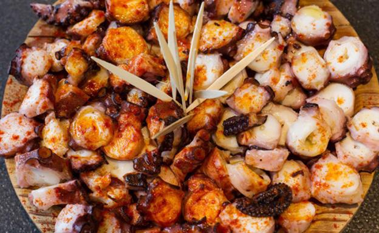

Coq au vin

El coq au vin es un estofado de gallo en el cual se añade una gran cantidad de vino. Usualmente el vino utilizado es tinto pero también se puede utilizar vino blanco. Suele tener además alguna verdura de tipo cebolla o nabo y las versiones mejoradas o más gourmet pueden incluir alguna seta, tradicionalmente la Morchella.
Link de la informacionPulpo a la gallega
Cuando hablamos de Pulpo a la Gallega estamos hablando de Galicia y su gastronomía. Se trata de un plato capaz de transportarte a las casas y pulperías de nuestra querida tierra. Aunque su preparación se haya extendido a lo ancho y largo del país, y es que no hay paladar que se resista a su exquisito sabor, es en Galicia donde su elaboración se remonta a los años en los que se debía secar el pulpo (al igual que se seca el bacalao) para poder transportarlo y conservarlo sin que corriera el riesgo de ponerse en mal estado.
Link de la informacionMacarons

Los macarons, son galletas de merengue y almendra. Mil y un colores y sabores distintos: grosella, chocolate negro o limón y albahaca. Una galleta que “entra por los ojos“, como si fuera una caja de acuarelas.
Link de la informacion